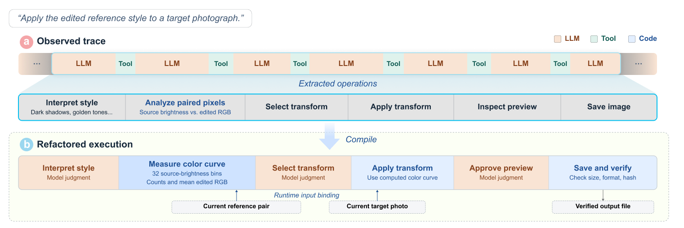
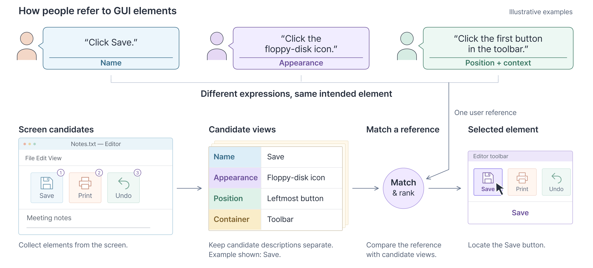
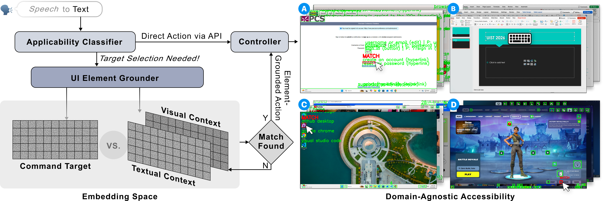
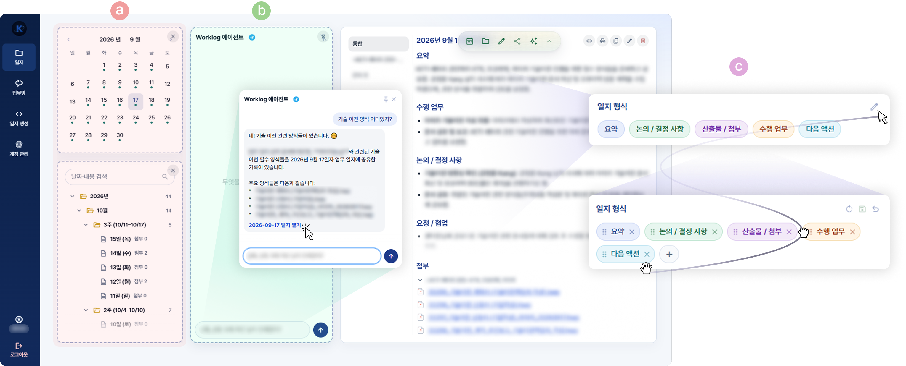
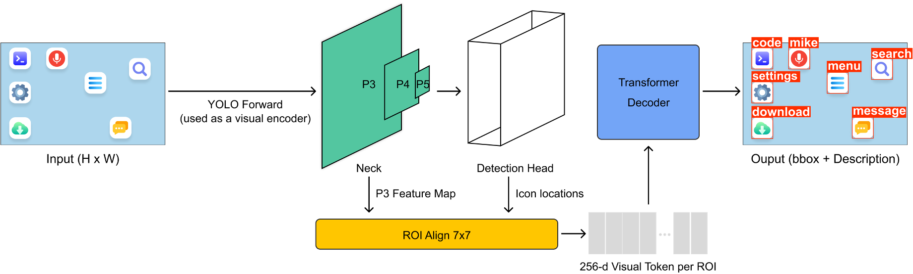
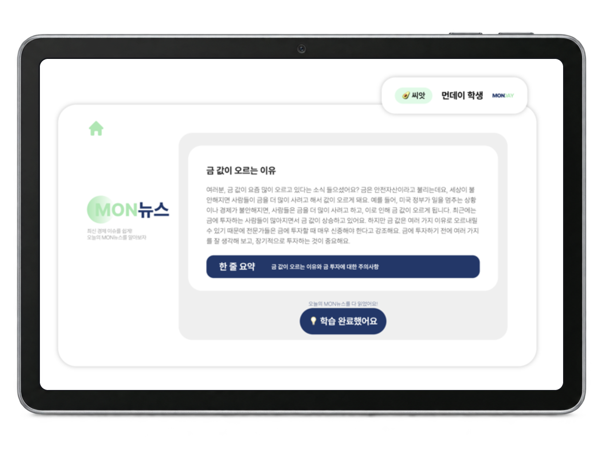
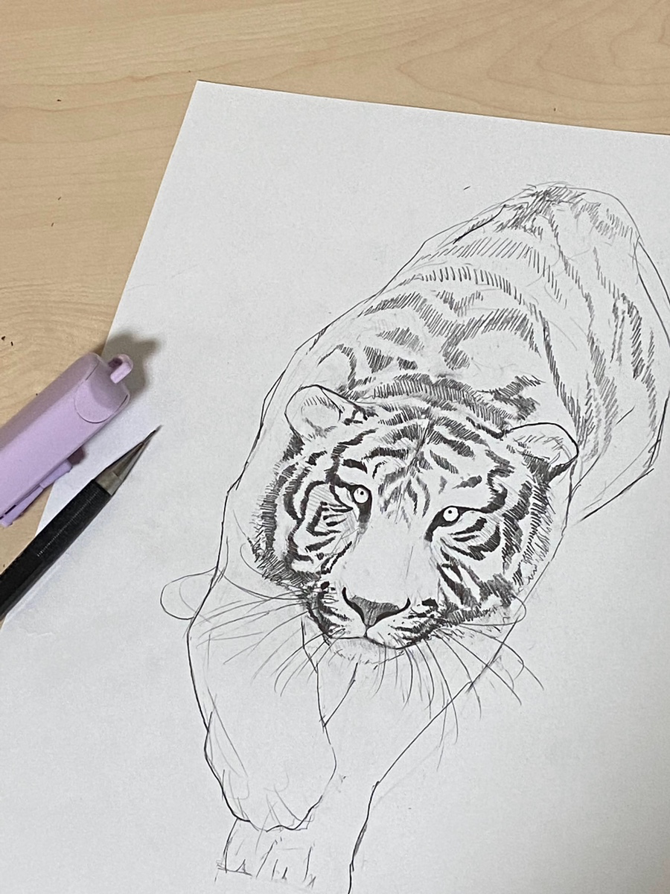
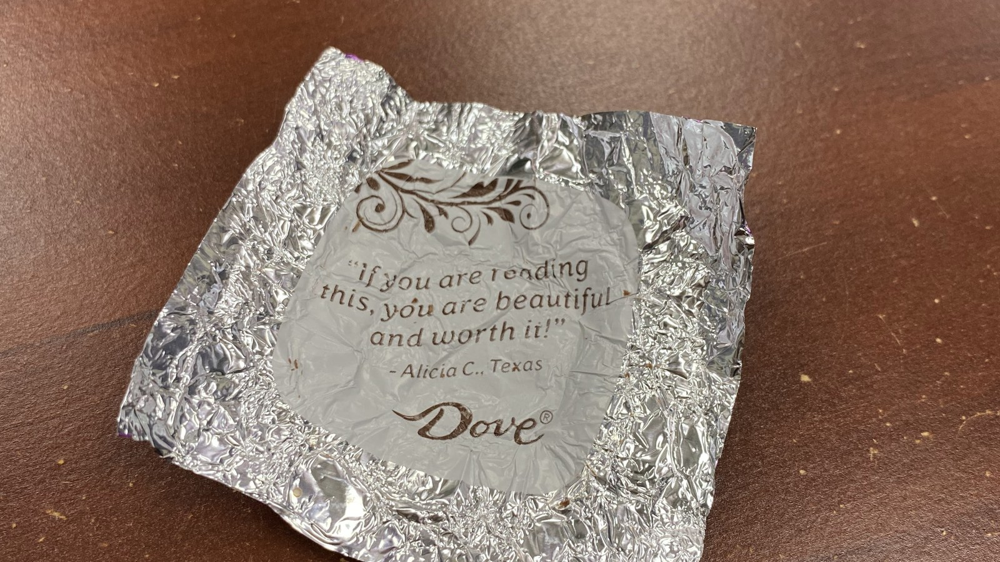
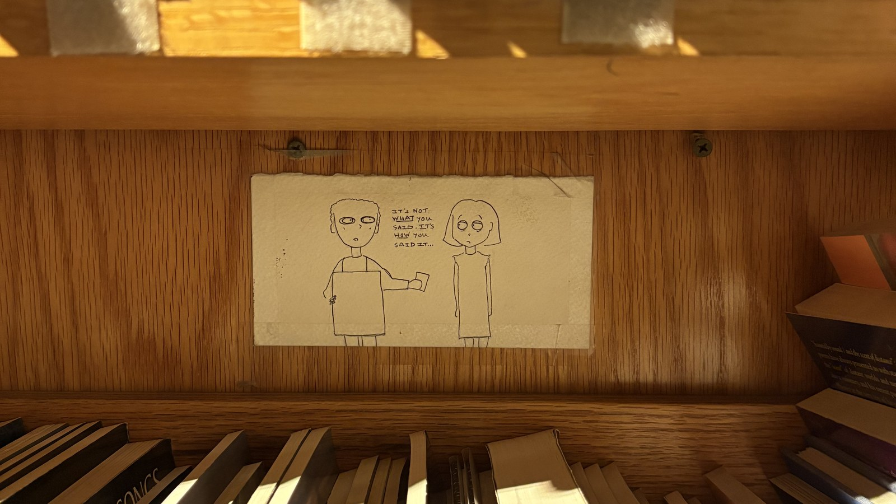

Hello, I am a researcher at the Korea Electronics Technology Institute (KETI) and conduct research with the Autonomous Mechanical Systems (AMS) Lab at Sookmyung Women’s University, where I received my B.E. in IT Engineering.
My research focuses on how computer-use agents can execute tasks reliably and efficiently across software environments, even when unexpected events disrupt execution. In my current work, I investigate which steps from a successful run can be reused as code and which decisions require a language model at runtime. I evaluate this approach across variations of the same task by measuring task success, the number of model calls, and execution time.
At KETI, I build agents for workplace workflows. I design how these agents clarify incomplete requests, carry out tasks across software tools, and show users what actions they took.
With a background in computer science and experience in applied research, I hope to build on this work through doctoral research. I’m particularly interested in how computer-use agents can verify outcomes and recover from failures with fewer model calls, and how they can recognize when to seek human input.
Selected Research

Trajectory-Based Agent Execution
- Built a framework that compiles reusable operations from computer-use trajectories into code and uses LLM calls for semantic decisions.
- Ongoing evaluation measures task success, model calls, and latency on held-out task variations.

GUI Grounding from User Descriptions
- Analyzed 508 referring expressions from 22 participants and found that 81.7% combined multiple cues.
- Developed a grounding ranker with same-target alignment that raised top-1 accuracy from 40.9% to 46.7%.

Visual Fallback for Single-Step GUI Control
- Trained a YOLOv9-S icon detector on synthetic screenshots to support single-step desktop control when accessibility metadata was missing or insufficient.
- Evaluated icon size, density, and distractors. Including icon-like distractors during training raised ScreenSpot mAP@50 from 0.327 to 0.579.
Publications

Transforming Unstructured Workplace Conversations into Knowledge Assets for Collaboration
Nov 2026
Sumin Ma, Eunbi Cho, Eunyoung Hong, Dongsik Yoon, and Jeonghoon Kang
Poster presented by Sumin Ma.

A Resource-Efficient UI Icon Understanding Pipeline for Actionable Interaction via Synthetic Data
Apr 2026
Euenseo Kim, Sumin Ma, Yumin Lee, Seongbeen Lee, and Joo Yong Sim
Selected Systems
OperateAI
Visual Workflow Orchestration
- Develop a visual interface for configuring and executing agent workflows with connected tools.
- Make workflow structure, execution status, and intermediate outputs inspectable so users can follow the execution process.
Worklog
From Conversations to Daily Work Records
- Develop a local-first agent that converts workplace conversations and shared files into dated work records using a local language model.
- Support natural-language Telegram requests with intent-aware workflow execution.
MyOwn
Conversational Task and Reminder Assistant
- Create tasks and reminders, add scheduled events, and answer schedule queries through natural-language Telegram messages.
- Resolve missing information through lightweight multi-turn clarification.

MONDAY
A News-Based Economics Learning Platform for Beginners
Undergraduate capstone
- Designed the interface and learning flow, and developed an LLM-based pipeline that simplifies economic news and generates vocabulary explanations and quizzes at different difficulty levels.
- Fine-tuned a Korean language model to classify news into eight economic categories and used embedding-based clustering to organize related articles into thematic learning series.
Experience
Seongnam, South Korea
Apr 2026 - Present
Korea Electronics Technology Institute
Develop agentic AI systems for workflow automation, with an emphasis on workflow visualization, agent orchestration, and tool use.
Seoul, South Korea
Aug 2025 - Present
Autonomous Mechanical Systems Lab, Sookmyung Women’s University
Conduct research on UI detection and GUI grounding for computer-use agents, including candidate representations and reference ambiguity.
Richardson, TX, USA
Jun 2023 - Jun 2024
Hyundai Digitech
Developed web-based systems for safety inspections, employee KPI management, and inventory and asset management.
Education
Seoul, South Korea
Mar 2022 - Feb 2026
Sookmyung Women’s University
Thesis: Learning Economics Through News (Advisor: Prof. Seonghoon Jeong)
Fine-tuned KLUE-RoBERTa-large to classify Korean economic news into eight categories (test macro-F1: 0.8003) and used embeddings to group related articles into reading series.
Reading, PA, USA
Aug 2024 - Dec 2024
Albright College
Awards & Honors
Outstanding Paper Award
Apr 2026
Recognized for research on GUI icon detection and captioning across synthetic data conditions.
Cohort Scholar
Jun 2024
Selected for a government-supported U.S. exchange based on academic achievement and potential to contribute to advanced industries.
New Business Idea Award
Oct 2022
Led a team that proposed using card transaction data for travel-route recommendations and shared expenses.
Service & Leadership
Brown Bag Outreach
Plano, TX, USA
Dec 2023 - Apr 2024
Packed and distributed meal kits for people experiencing homelessness.
Feed My Starving Children
Richardson, TX, USA
Aug 2023 - Jan 2024
Packed nutritious food packages for children facing food insecurity.
IT Engineering Student Society, Sookmyung Women’s University
Seoul, South Korea
Mar 2022 - Feb 2023
Led website operations, organized web framework study sessions, and oversaw technical article publication. Recognized for outstanding team leadership.
A bit more about me
I enjoy drawing! It helps me relax and clear my mind.

I like little messages I come across in everyday life.


I love kongdduck (콩떡), my sister's puppy. He is adorable.